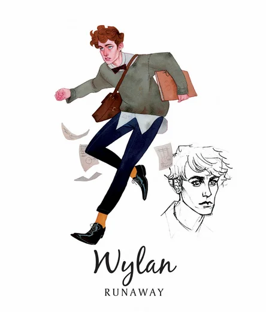

КТО ЕСТЬ КТО В ШЕСТЁРКЕ ВОРОНОВ?
В центре данной дилогии находятся шесть главных героев: Маттиас Хельвар, Джеспер Фахи, Уайлен Ван Эк, Инеж Гафа, Нина Зеник и Каз Бреккер. У всех этих персонажей свой характер, своя цель и своя особенная история. Узник, обуреваемый жаждой мести. Стрелок, который любит испытывать судьбу. Беглец из высших слоев общества. Шпионка, известная под кличкой Призрак. Девушка из магического ордена гришей с необычным даром. Вор с талантом выходить сухим из воды.
КАЗ БРЕККЕР
Гений преступного мира. Вор, известный под именем Грязные Руки: потому что нет такого греха, который он не взял бы на себя за хорошее вознаграждение.
Внешность: Его темный жилет и брюки отличались простым кроем и строгим, деловым стилем — так он насмехался над богачами. Каз носит с собой трость с набалдашником в виде вороньей головы, его узкое лицо скрыто полями шляпы. Каз носит две татуировки: одна, с вороном и чашей «Отбросов», набита на предплечье, другая, с черной буквой «Р», на бицепсе чуть выше. Глаза Каза Бреккера — глаза старика.
Характер: амбициозный, безжалостный, аморальный.
История: Когда Каз официально стал членом «Отбросов», ему было всего двенадцать, а банда представляла собой жалкое зрелище: кучка беспризорников, замызганных попрошаек, зарабатывающих игрой в наперстки, и мелких жуликов, живущих в разрушенном доме в худшей части Бочки. Но он и не желал другой банды — он хотел ту, которую сам сделает великой, ту, которая будет нуждаться в нем.
ИНЕЖ ГАФА
Призрак. Шпионка: ловкая акробатка, похитительница секретов. Безупречно владеет ножами.
Внешность: невысокая девушка с темными волосами и сулийской бронзовой кожей. А еще она — Призрак, и единственный закон, которому она подчиняется, — это закон всемирного тяготения, да и то не всегда.
Характер: хитра, мастер переговоров.
История: была похищена и отдана в бордель, откуда ее вытащил Каз.
МАТТИАС ХЕЛЬВАР
Отличный солдат и боец.
Внешность: 18 лет, красавец. Его тело будто высечено из стали. Его кожа бледна, а некогда длинные золотые волосы сбриты.
Характер: силён, храбр и остроумен.
История: Они с Ниной помогли друг другу, когда их корабль попал в шторм, но по прибытии в Кеттердам Нина предала Маттиаса, чтобы спасти его. В результате молодой человек попал в тюрьму Хеллгейт. Испытывает к Нине ненависть за предательство, но и любит ее. Из Хеллгейта Маттиаса вытащил Каз.
НИНА ЗЕНИК
Сердцебит. Маг. Солдат Второй армии в Равке.
Внешность: высокая и красивая, похожая на кариатиду на носу корабля, вытесанную щедрой рукой.
Характер: кокетка, любит флирт, модница (однажды Каз видел, как она строит глазки паре туфель в витрине магазина).
История: после кораблекрушения предает Маттиаса, чтобы спасти ему жизнь, однако юноша попадает в тюрьму Хеллгейт. Нина давний член банды «отбросов», и в результате именно благодаря Казу Маттиаса удается спасти из тюрьмы.
ДЖЕСПЕР ФАXИ
Стрелок из Земени.
Внешность: долговязый, темнокожий и сероглазый парень, который не мог и секунды постоять на месте. Не расстается с винтовкой, силуэт которой за спиной придавал ему вид неуклюжей птицы с длинными конечностями.
Характер: оружие — его утешение во всем.
История:отец Джеспера уверен, что сын учится в университете в Кеттердаме.
УАЙЛЕН ВАН ЭК
Лучший подрывник в Бочке.
Внешность: юнец с золотисто-рыжими кудрями, которые падают ему на глаза. Выглядит совсем как ребенок, с гладкой кожей и большими глазами.
Характер: застенчив, добр ко всем.
История: беглый сын купца, которого Каз принял к себе в банду.